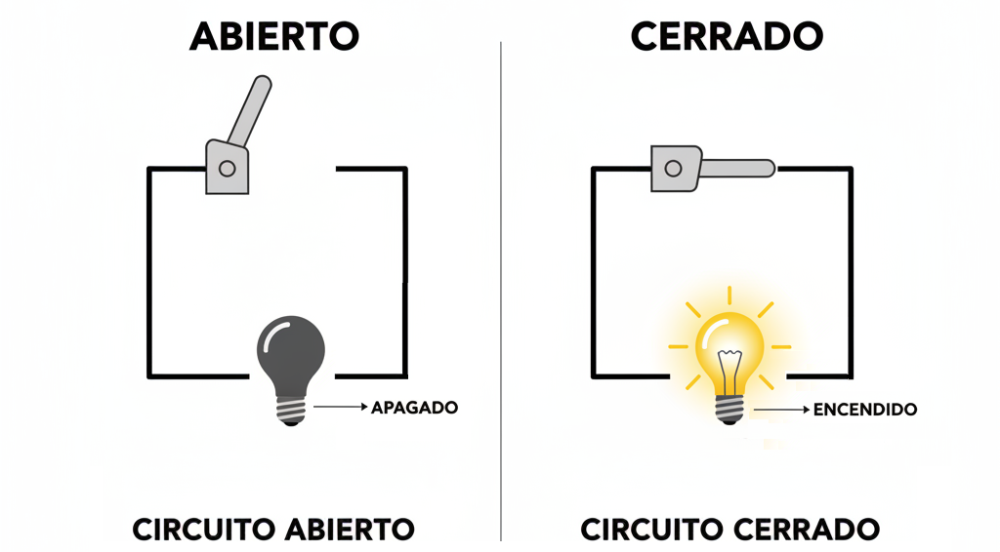
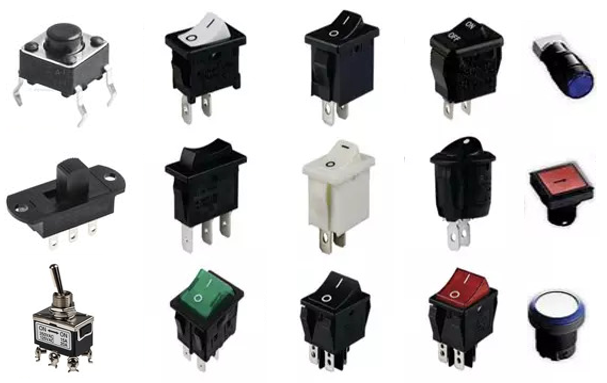
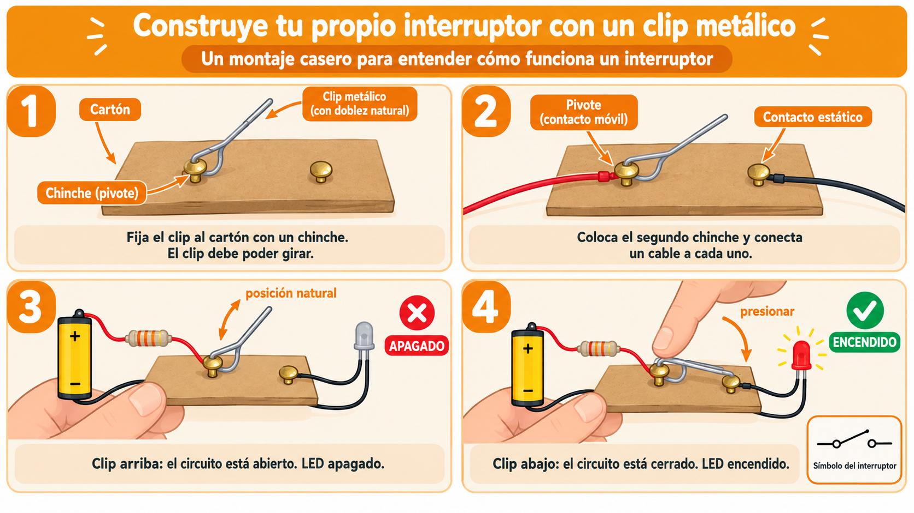
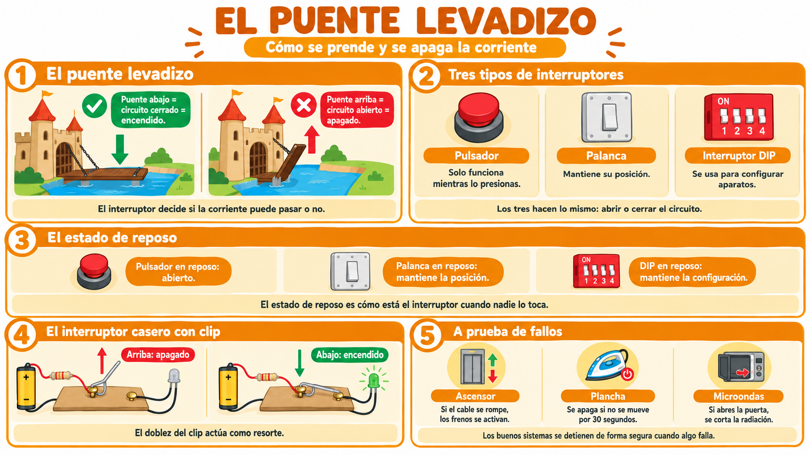

En los castillos antiguos, había un puente que se podía subir o bajar. Cuando estaba abajo, los carros podían cruzar el foso. Cuando estaba arriba, nadie podía pasar.
Los interruptores funcionan igual: son puentes levadizos para los electrones. Cuando el puente está abajo, la corriente puede pasar. Cuando está arriba, la corriente se detiene.
💡 Idea clave: un interruptor no genera energía. Solo decide si la energía puede pasar o no.
💡 Importante: el interruptor no genera energía. Si la pila se agota, por más que muevas el interruptor, el LED no encenderá. El interruptor solo controla el paso de la energía que ya está allí.
En electrónica, las palabras "abierto" y "cerrado" significan lo contrario de lo que podrías imaginar. Aquí va la aclaración:

⚠️ Ojo con esto: cuando alguien dice "el circuito está cerrado", no significa que esté encerrado o bloqueado, sino que está completo y funcionando.
No todos los interruptores son iguales. Aquí están los tres que encontrarás en tu kit de electrónica:
Solo funciona mientras lo mantienes presionado. Al soltarlo, el circuito se abre automáticamente. Es como el timbre de una puerta o el botón de reset de un videojuego.
Mantiene su posición hasta que alguien lo cambia. Si lo pones arriba, queda arriba. Si lo pones abajo, queda abajo. Es como el interruptor de la luz de tu cuarto.
Es un grupo de pequeños interruptores en una sola pieza. Cada uno se puede poner arriba o abajo por separado. Se usa para configurar aparatos: por ejemplo, para elegir el idioma de un televisor o la dirección de un control remoto.

💡 El estado de reposo: cada interruptor tiene un estado "natural", es decir, cómo está cuando nadie lo está tocando. A ese estado se le llama estado de reposo.
Los interruptores están en todas partes. Aquí van algunos ejemplos:
Antes de tocar cables, vas a representar con tu cuerpo cómo funciona un interruptor. Después, construirás tu propio interruptor casero con materiales sencillos.
💡 Dos formas de hacer este taller: puedes hacerlo en el aula (con el kit del colegio) o llevarlo a casa si tienes acceso a los materiales. Tu docente te dirá cuál elegir.
Formación: los estudiantes se ubican en círculo, todos mirando hacia la espalda de la persona de adelante, y apoyan suavemente sus manos en los hombros del compañero del frente.
El flujo (corriente): al dar la señal, el grupo empieza a dar pasos hacia adelante al mismo ritmo. Mientras las manos sigan apoyadas en los hombros, el "flujo de energía" avanza sin interrupciones.
Apertura del circuito: a una orden del docente (o cuando un estudiante designado decide actuar como "interruptor"), la persona levanta los brazos y se echa hacia atrás.
Regla física: al romperse el contacto físico, todo el círculo debe congelarse inmediatamente. No puede avanzar nadie porque el paso de la corriente se interrumpió en ese punto exacto.
Cierre del circuito: cuando el "puente" vuelve a bajar sus manos sobre los hombros del compañero, la conexión se restablece y el grupo puede reanudar la marcha.
Después de la actividad, el docente puede lanzar estas preguntas al grupo:
| Observación en el juego | Concepto eléctrico equivalente |
|---|---|
| Todos avanzan coordinados en círculo. | Circuito cerrado: hay continuidad física para que circule la corriente. |
| Un estudiante levanta las manos. | Interruptor abierto o falla: se crea un punto de alta impedancia (aire o vacío). |
| Todo el grupo se detiene al mismo tiempo. | La corriente se interrumpe en todo el circuito en serie, no solo donde ocurrió la desconexión. |
Vas a construir un interruptor casero con materiales que ya tienes en casa. La idea es crear un "puente" que se pueda cerrar y abrir.

💡 Movimiento mecánico y resorte: este interruptor funciona porque el clip se mueve y porque el metal tiene elasticidad. Esa combinación es lo que distingue a los interruptores mecánicos: el movimiento físico es esencial para abrir y cerrar el circuito.
Si comparas este montaje con el interruptor de la luz de tu casa, verás que tienen mucho en común: ambos usan una palanca y un resorte para abrir y cerrar los contactos.
¿Por qué el clip metálico funciona como interruptor? ¿Qué pasaría si fuera de plástico en lugar de metal?
💡 ¿Sabías que…? En los trenes modernos hay un interruptor llamado "del hombre muerto". El maquinista debe mantenerlo presionado todo el tiempo. Si se desmaya o lo suelta, el tren se detiene solo. ¡Un interruptor que salva vidas!
⚠️ Seguridad: trabaja siempre con 3 V o 5 V. Nunca uses voltajes de pared (110 V o 220 V). Siempre usa resistencias de protección con los LEDs.
A finales del siglo XIX, cuando las primeras instalaciones eléctricas residenciales empezaron a llegar a las casas, no existían los interruptores de pared como los conocemos hoy. Para encender o apagar una bombilla, las personas debían desenroscarla ligeramente de la boquilla, o usar interruptores de cuchilla expuestos que generaban chispas al separar los contactos lentamente. Era un sistema peligroso, que causaba descargas eléctricas e incendios.
La misma época vio la llegada de los trenes eléctricos. Eran más rápidos y limpios que los de vapor, pero también más peligrosos: si el maquinista se desmayaba o soltaba los controles, el tren seguía avanzando sin conductor.
En 1902, un inventor afroamericano llamado Granville Woods (1856–1910) tuvo una idea revolucionaria: diseñó un sistema que detenía el tren automáticamente si el maquinista dejaba de presionar un interruptor. Era un interruptor que debía mantenerse accionado todo el tiempo; si el maquinista lo soltaba, el tren se detenía.
Ese invento, llamado "dead man's switch" (interruptor del hombre muerto), se convirtió en un estándar de seguridad en trenes, ascensores, cortadoras industriales y muchas otras máquinas. Hoy es un principio básico de la ingeniería: los sistemas deben fallar de forma segura.
El principio de Woods se aplica hoy en todas partes:
La lección: los buenos ingenieros no diseñan para el éxito, sino para el fracaso. Asumen que algo puede salir mal, y diseñan el sistema para que, cuando eso ocurra, el resultado sea seguro.
Fuentes: archivos históricos de la patente de Granville Woods y biografías de la ingeniería ferroviaria.
Dale play y en menos de 5 minutos descubrirás:
💡 Escúchenlo en familia y comenten qué interruptores usan sin darse cuenta.